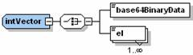
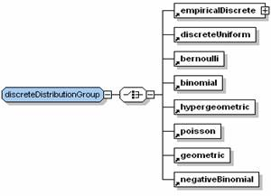
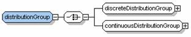

|
Optimization Services general Language (OSgL)
Click to see or download the OSgL XML Schema -> OSgL.xsd [stable]
OSgL (general) contains definitions of general elements and data types used by all other OSxL schemas. Thus OSgL is usually included in the beginning of another OSxL schema through the statement:
<xs:include schemaLocation="OSgL.xsd"/>
For example, the following figure shows the <intVector> data type in OSgL that is used in OSiL for defining a vector of row or column indexes.

<xs:complexType name="intVector">
<xs:choice>
<xs:element name="base64BinaryData" type="base64BinaryData"/>
<xs:element name="el" maxOccurs="unbounded">
<xs:complexType>
<xs:simpleContent>
<xs:extension base="xs: int ">
<xs:attribute name="mult" type="xs:positiveInteger" use="optional" default="1"/>
<xs:attribute name="incr" type="xs:int" use="optional" default="0"/>
</xs:extension>
</xs:simpleContent>
</xs:complexType>
</xs:element>
</xs:choice>
</xs:complexType>
An <intVector> may have one or more <el> children or a <base64BinaryData> child if the data in the <el> elements are compressed. The compression is explained in detail in the LPFML paper. Each <el> element has a mult attribute (for multiplicity) with a default value 1 and an incr attribute (for increment) with a default value 0. For example
<el>0</el><el>0</el><el>0</el><el>0</el><el>0</el>
and
<el>0</el><el>1</el><el>2</el><el>3</el><el>4</el>
is more concisely expressed as
<el mult="5">0</el> and <el mult="5" incr="1">0</el>
There is also a similar <doubleVector> data type defined in OSgL.
In the following table, we list some common data types defined in OSgL.
Type Name |
Brief Description |
intVector |
vector of integers |
doubleVector |
vector of doubles |
elType |
el element with a name and a value attribute and a description text |
mapType |
a sequence of el elements (name-value pairs) |
base64Binary |
compression of a sequence of data usually expressed in el elements; see the LPFML paper [53] |
sparseVector |
sparse vector with an idx array and a nonz value array |
listMatrix |
typical sparse matrix storage type with a start array, a choice of rowIdx or colIdx array, and a nonzero value array |
mpsMatrix |
MPS style sparse matrix storage with a sequence of col (or row) elements; each col (or row) element is in turn a sequence of row (or col) elements |
matrixMarket |
common sparse matrix storage used in linear algebra with a sequence of el elements; each element is a double value (for a matrix entry) with a row and a col attribute (for matrix indexes) |
xmlData
|
a sequence of any data |
In The following table, we list typical function-related elements. Many of these functions are distribution functions. All the distribution functions can have an optional cdf boolean attribute which is false by default. If true, the distribution function is a cumulative distribution function. If false, the distribution is a probability distribution function (pdf, for continuous distributions) or probability mass function (pmf, for discrete distributions). Many of these functions have parameters which are expressed as element attributes. The distribution functions are widely used in the OSiL extension to stochastic programming.
Function Name |
Brief Description |
userFunctions |
a sequence of userFunction elements; each userFunction element contains one OSnLNode as an expression tree root for expressing a function |
userVariables |
a sequence of userVariable elements; each userVariable element contains one OSnLNode as an expression tree root for expressing a user defined variable |
discreteUniform |
Discrete Uniform function with a parameter N |
bernoulli |
Bernoulli function with a parameter p |
binomial |
Binomial function with parameters N, p |
hypergeometric |
Hypergeometric function with parameters N, M, n |
poisson |
Poisson function with a parameter lamda |
geometric |
Geometric function with a parameter p |
negativeBinomial |
Negative Binomial function with a parameter p, r |
empiricalDiscrete |
Empirical Discrete function with a sequence of el elements; each el element is a double value and has a prob attribute |
empiricalContinuous |
Empirical Continuous function with a sequence of el elements; each el element contains one OSnLNode as an expression tree root for expressing a function and a from and a to attribute for the function domain |
uniform |
Uniform function with parameters a, b |
normal |
Normal function with parameters mu, sigma |
stdNormal |
Standard normal function |
exponential |
Exponential function with a parameter lamda |
weibull |
Weibull function with parameters location, scale, shape |
erlang |
Erlang function with parameters lamda, n |
gamma |
Gamma function with parameters location, scale, shape |
beta |
Beta function with parameters degree1, degree2 |
betaGeneral |
General Beta function with parameters degree1, degree2, min, max |
lognormal |
Lognormal function with parameters mu, sigma |
cauchy |
Cauchy function with parameters location, scale |
t |
Student T function with a parameter degree |
chiSquare |
Chi Square function with a parameter degree |
f |
F function with parameters degree1, degree2 |
logistic |
Logistic function with parameters mu and beta |
logLogistic |
Log Logistic function with parameters mu and beta |
logarithmic |
Logarithmic function with parameters a, b |
pareto |
Pareto function with parameters shape and scale |
rayleigh |
Rayleigh function with a parameter beta |
pert |
Pert function with parameters a, c, b |
triangular |
Triangular function with parameters a, c, b |
multivariateDiscrete |
Multivariate Discrete function with a sequence of 2 or more scenario elements; each scenario is a sequence of 2 or more el elements of double values |
multinomial |
Multinomial function with a parameter N and a sequence of el elements of probability values |
bivariateNormal |
Bivariate Normal function with parameters mu1, sigma1, mu2, sigma2, rho |
multivariateNormal |
Multivariate Normal function with a sequence of 3 or more mu elements and a covariance matrix of matrixMarket type |
linearTransformation |
Linear transformation function with a numberRows and a numberColumns attribute; it contains one constants element of type doubleVector, one matrix element of type matrixMarket, and a randomVariables element to indicate a multivariate distribution |
Elements of similar types can be grouped and referenced together. For example the discreteDistributionGroup group shown in the following figure is used to group all the discrete distribution functions in the above table.

<xs:group name="discreteDistributionGroup">
<xs:choice>
<xs:element ref="empiricalDiscrete"/>
<xs:element ref="discreteUniform"/>
<xs:element ref="bernoulli"/>
<xs:element ref="binomial"/>
<xs:element ref="hypergeometric"/>
<xs:element ref="poisson"/>
<xs:element ref="geometric"/>
<xs:element ref="negativeBinomial"/>
</xs:choice>
</xs:group>
A continuousDistributionGroup is similarly defined. The more general distributionGroup is a group of discreteDistributionGroup and continuousDistributionGroup as shown in the following figure.

<xs:group name="distributionGroup">
<xs:choice>
<xs:group ref="discreteDistributionGroup"/>
<xs:group ref="continuousDistributionGroup"/>
</xs:choice>
</xs:group>
Links:
Click to see or download the OSgL XML Schema -> OSgL.xsd
|

{kind=link}
{kind=link}
{kind=link}